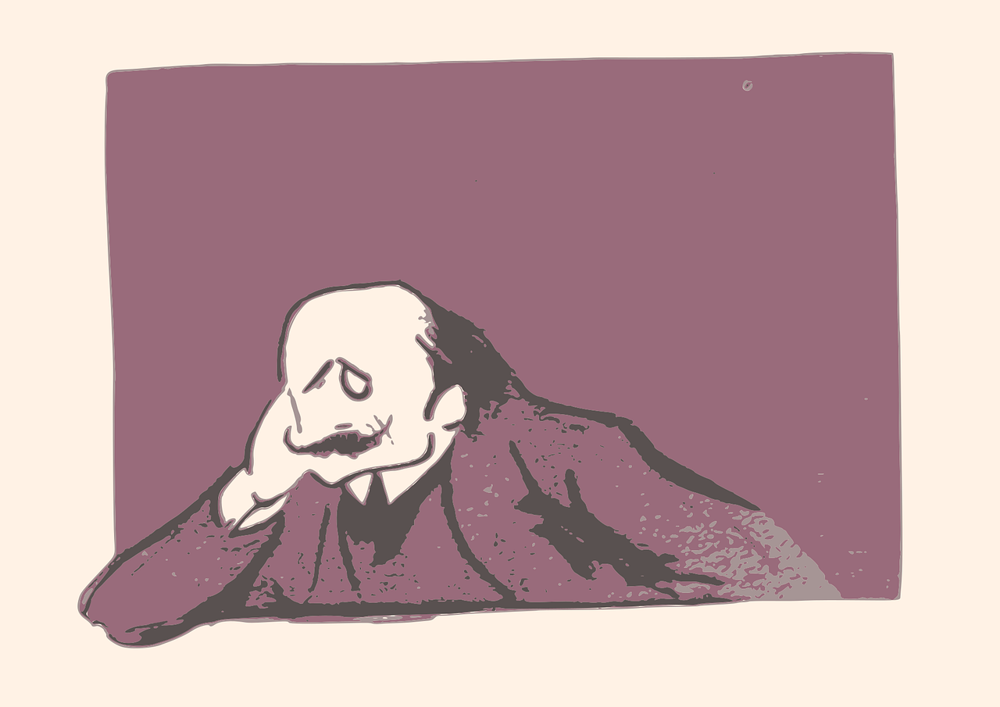
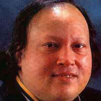

شاعری کی دنیا 

نصرت فتح علی خان
سادگی تو ہماری ذرا دیکھیے اعتبار آپ کے وعدے پر کر لیا
بات تو صرف اک رات کی تھی مگر انتظار آپ کا عمر بھر کر لیا
عشق میں الجھنیں پہلے ہی کم نہ تھیں اور پیدا نیا درد سر کر لیا
لوگ ڈرتے ہیں قاتل کی پرچھائیں سے ہم نے قاتل کے دل میں بھی گھر کر لیا
ذکر اک بے وفا اور ستم گر کا تھا آپ کا ایسی باتوں سے کیا واسطہ
آپ تو بے وفا اور ستم گر نہیں آپ نے کس لیے منہ ادھر کر لیا
زندگی بھر کے شکوے گلے تھے بہت وقت اتنا کہاں تھا کہ دہراتے ہم
ایک ہچکی میں کہہ ڈالی سب داستاں ہم نے قصے کو یوں مختصر کر لیا
بے قراری ملے گی مجھے نہ سکوں چین چھن جائے گا نیند اڑ جائے گی
اپنا انجام سب ہم کو معلوم تھا آپ نے دل کا سودا مگر کر لیا
زندگی کے سفر میں بہت دور تک جب کوئی دوست آیا نہ ہم کو نظر
ہم نے گھبرا کے تنہائیوں سے صباؔ ایک دشمن کو خود ہم سفر کر لیا
ہے کہاں کا ارادہ تمہارا صنم کس کے دل کو اداؤں سے بہلاؤ گے
سچ بتاؤ کہ اس چاندنی رات میں کس سے وعدہ کیا ہے کہاں جاؤ گے
دیکھو اچھا نہیں یہ تمہارا چلن یہ جوانی کے دن اور یہ شوخیاں
یوں نہ آیا کرو بال کھولے ہوئے ورنہ دنیا میں بدنام ہو جاؤ گے
آج جاؤ نہ بے چین کر کے مجھے جان جاں دل دکھانا بری بات ہے
ہم تڑپتے رہیں گے یہاں رات بھر تم تو آرام کی نیند سو جاؤ گے
پاس آؤ تو تم کو لگائیں گلے مسکراتے ہو کیوں دور سے دیکھ کر
یوں ہی گزرے اگر یہ جوانی کے دن ہم بھی پچھتائیں گے تم بھی پچھتاؤ گے
بے وفا بے مروت ہے ان کی نظر یہ بدل جائیں گے زندگی لوٹ کر
حسن والوں سے دل کو لگایا اگر اے فناؔ دیکھو بے موت مر جاؤ گے
ان کی طرف سے ترک ملاقات ہو گئی
ہم جس سے ڈر رہے تھے وہی بات ہو گئی
آئینہ دیکھنے میں نئی بات ہو گئی
ان سے ہی آج ان کی ملاقات ہو گئی
طے ان سے روز حشر ملاقات ہو گئی
اتنی سی بات کتنی بڑی بات ہو گئی
کم ظرفیٔ حیات سے تنگ آ گیا تھا میں
اچھا ہوا قضا سے ملاقات ہو گئی
دن میں بھٹک رہے ہیں جو منزل کی راہ سے
یہ لوگ کیا کریں گے اگر رات ہو گئی
آئے ہیں وہ مریض محبت کو دیکھ کر
آنسو بتا رہے ہیں کوئی بات ہو گئی
تھا اور کون پوچھنے والا مریض کا
تم آ گئے تو پرسش حالات ہو گئی
اے بلبل بہار چمن اپنی خیر مانگ
صیاد و باغباں میں ملاقات ہو گئی
جب زلف یاد آ گئی یوں اشک بہہ گئے
جیسے اندھیری رات میں برسات ہو گئی
گلشن کا ہوش اہل جنوں کو بھلا کہاں
صحرا میں پڑ رہے تو بسر رات ہو گئی
در پردہ بزم غیر میں دونوں کی گفتگو
اٹھی ادھر نگاہ ادھر بات ہو گئی
کب تک قمرؔ ہو شام کے وعدے کا انتظار
سورج چھپا چراغ جلے رات ہو گئی